Anchor

taraxacum_typ [T]Taraxacum typ (paardenbloem type)
echinaat t
Reply in chat: per pair same / different / unsure, or e.g. tilia: different all, centaurea_cyanus: 1 same, rest different.
Only same-letter T / fenestraat partners are candidates. Other echinaat letters already rejected.
taraxacum_typ [T]No pending partners matching filter.
C-type (no spines). Prefer other C / non-spiny Centaurea; reject fenestraat T and long-spine H/A as default noise unless you say same.
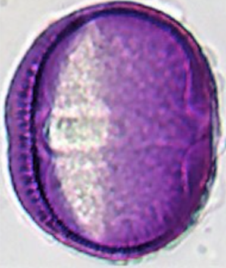
centaurea_cyanus [C]10 candidates:
centaurea_cyanus ↔ heracleum_typ · ov [38.1, 38.5] · tricol*centaurea_cyanus [C]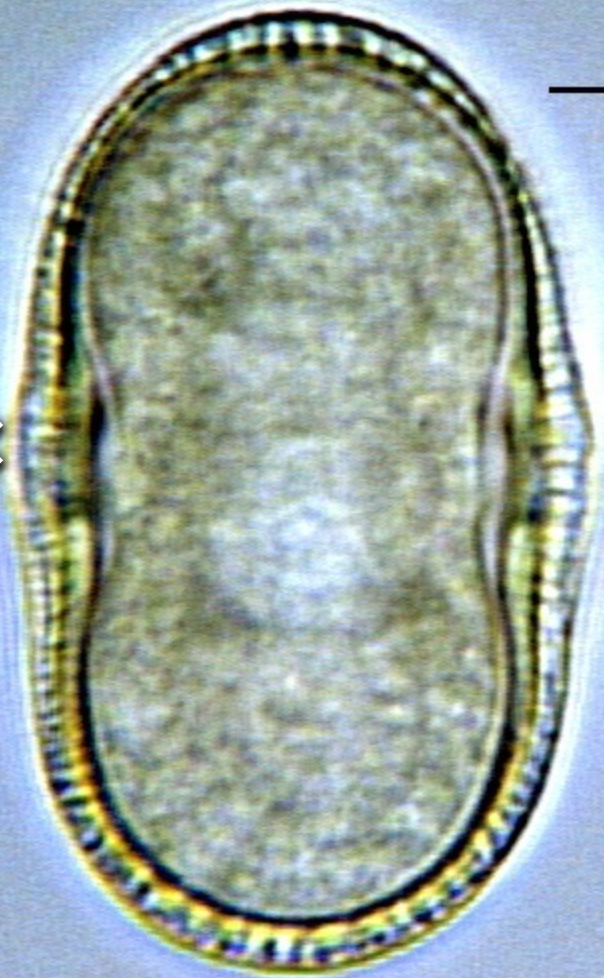
heracleum_typcentaurea_cyanus ↔ trifolium_pratense · ov [38.1, 38.7] · tricol*centaurea_cyanus [C]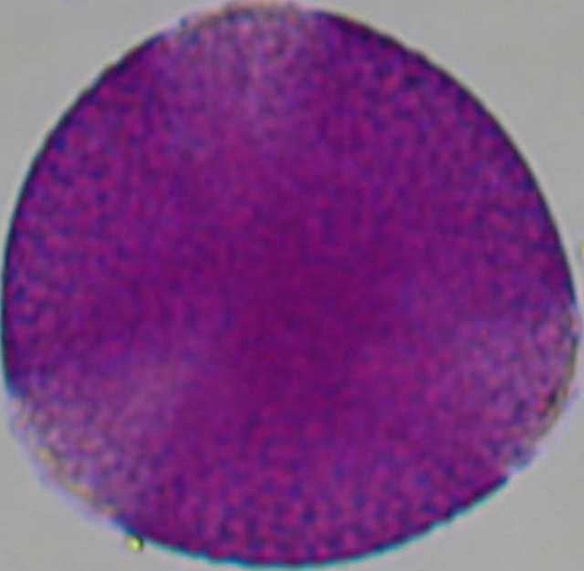
trifolium_pratensecentaurea_cyanus ↔ crataegus_typ · ov [38.1, 40.0] · tricol*centaurea_cyanus [C]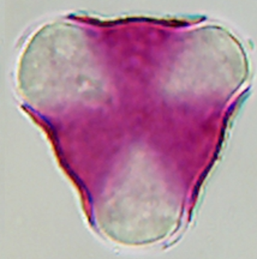
crataegus_typcentaurea_cyanus ↔ calluna_vulgaris · ov [35.5, 38.1] · tricol*centaurea_cyanus [C]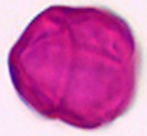
calluna_vulgariscentaurea_cyanus ↔ helianthus_annuus · ov [35.0, 38.1] · tricol*centaurea_cyanus [C]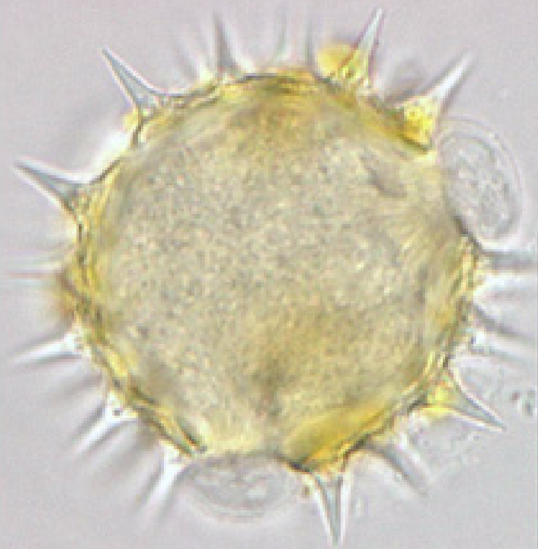
helianthus_annuus [H]centaurea_cyanus ↔ helianthus_typ · ov [35.0, 38.1] · tricol*centaurea_cyanus [C]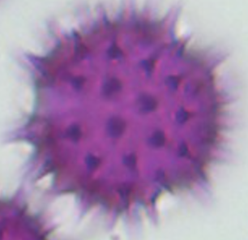
helianthus_typ [H]centaurea_cyanus ↔ tilia_typ · ov [35.0, 38.1] · tricol*centaurea_cyanus [C]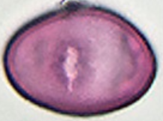
tilia_typcentaurea_cyanus ↔ ranunculus_typ · ov [34.5, 38.1] · tricol*centaurea_cyanus [C]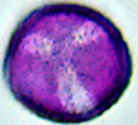
ranunculus_typcentaurea_cyanus ↔ vicia_typ · ov [33.8, 38.1] · tricol*centaurea_cyanus [C]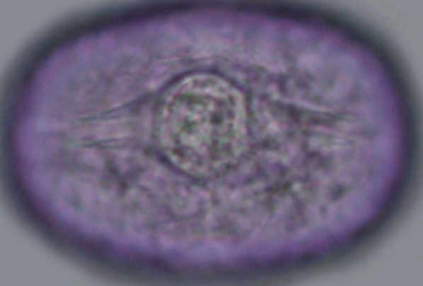
vicia_typcentaurea_cyanus ↔ acer_platanoides · ov [33.1, 38.1] · tricol*centaurea_cyanus [C]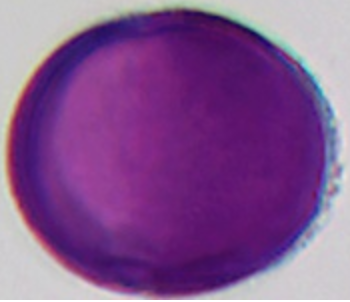
acer_platanoidesReticulate/foveolate tricolporate; compare size-near partners with images.
tilia_typ10 candidates:
tilia_typ ↔ helianthus_annuus · ov [35.0, 35.0] · tricol*tilia_typhelianthus_annuus [H]tilia_typ ↔ helianthus_typ · ov [35.0, 35.0] · tricol*tilia_typhelianthus_typ [H]tilia_typ ↔ calluna_vulgaris · ov [35.0, 35.5] · tricol*tilia_typcalluna_vulgaristilia_typ ↔ ranunculus_typ · ov [34.5, 35.0] · tricol*tilia_typranunculus_typtilia_typ ↔ vicia_typ · ov [33.8, 35.0] · tricol*tilia_typvicia_typtilia_typ ↔ acer_platanoides · ov [33.1, 35.0] · tricol*tilia_typacer_platanoidestilia_typ ↔ centaurea_jacea · ov [33.0, 35.0] · tricol*tilia_typ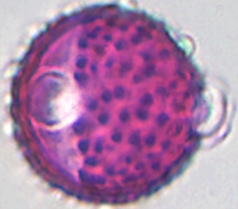
centaurea_jacea [J]tilia_typ ↔ centaurea_typ · ov [33.0, 35.0] · tricol*tilia_typ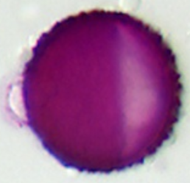
centaurea_typ [J]tilia_typ ↔ sinapis_typ · ov [33.0, 35.0] · tricol*tilia_typ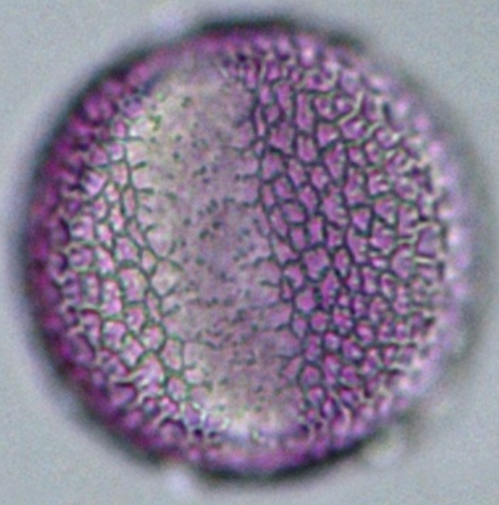
sinapis_typtilia_typ ↔ achillea_typ · ov [32.0, 35.0] · tricol*tilia_typ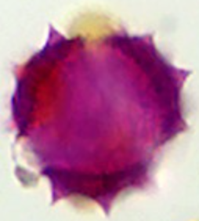
achillea_typ [A]Verrucaat / scabraat tricolpate; compare size-near partners.
ranunculus_typ10 candidates:
ranunculus_typ ↔ helianthus_annuus · ov [34.5, 35.0] · tricol*ranunculus_typhelianthus_annuus [H]ranunculus_typ ↔ helianthus_typ · ov [34.5, 35.0] · tricol*ranunculus_typhelianthus_typ [H]ranunculus_typ ↔ tilia_typ · ov [34.5, 35.0] · tricol*ranunculus_typtilia_typranunculus_typ ↔ vicia_typ · ov [33.8, 34.5] · tricol*ranunculus_typvicia_typranunculus_typ ↔ calluna_vulgaris · ov [34.5, 35.5] · tricol*ranunculus_typcalluna_vulgarisranunculus_typ ↔ acer_platanoides · ov [33.1, 34.5] · tricol*ranunculus_typacer_platanoidesranunculus_typ ↔ centaurea_jacea · ov [33.0, 34.5] · tricol*ranunculus_typcentaurea_jacea [J]ranunculus_typ ↔ centaurea_typ · ov [33.0, 34.5] · tricol*ranunculus_typcentaurea_typ [J]ranunculus_typ ↔ sinapis_typ · ov [33.0, 34.5] · tricol*ranunculus_typsinapis_typranunculus_typ ↔ achillea_typ · ov [32.0, 34.5] · tricol*ranunculus_typachillea_typ [A]